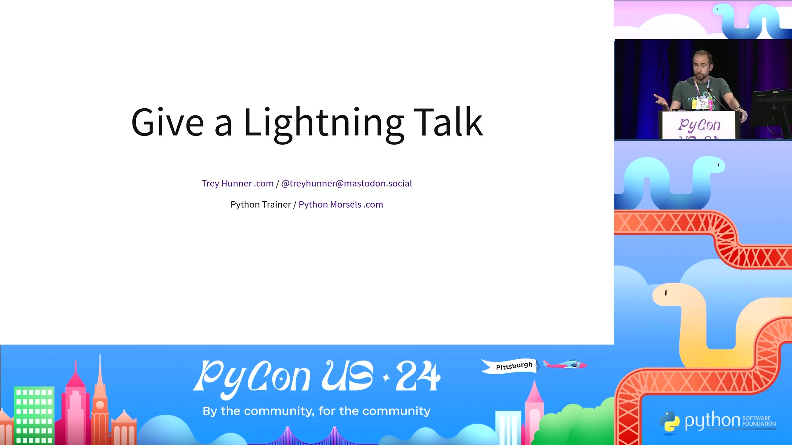
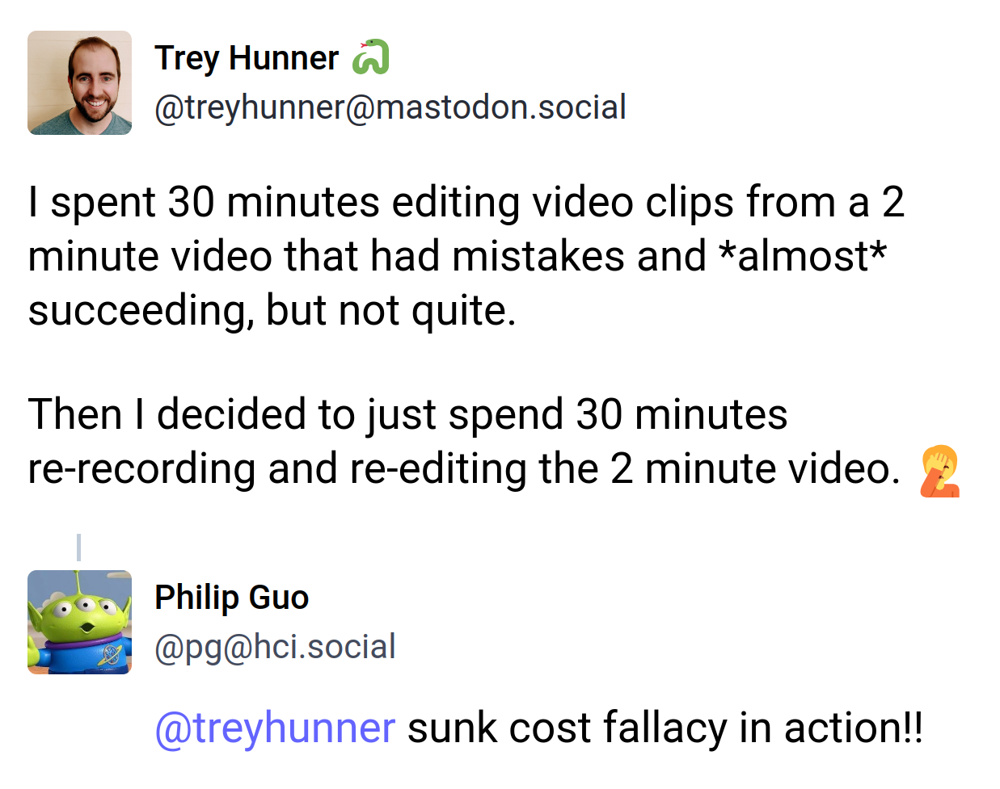

>>> def factorial(n):
... if n == 0: return 1
... return n * factorial(n-1)
...
>>> word = "octothorpe"
>>> word[0]
'o'
>>> word[0][0][0][0]
'o'
>>> type(type(type)
<class 'type'>

Metacognition
Learning About Learning
Thinking About Thinking
Blank
Metacognition
I am a learner, a dabbler, and a hobbyist
Python teacher and PSF CoC WG alumnus
Thinking about
teaching,
learning,
language,
intent,
and perspectives
A better programmer, teacher, learner, and person.
Understand the world better.
Understand your own actions.
More deliberately speak & act.
More deliberately speak & act.
Patterns are great
Shortcuts are great
Heuristics are great
TODO image of mouse cursor
TODO image of mouse cursor crossed out
TODO show kdenlive
TODO show me in OBS waving
“I've come this far. I can't give up now.”
Sunk Cost Bias

Cognitive Biases
Amos Tversky & Daniel Kahneman
Sunk Cost Bias
“I've come this far. I can't give up now.”
Confirmation Bias
Validating your current assumptions
Anchoring Bias
Anchoring Bias
“Can you get this done in 13 weeks?”
“Yes. This should take about 8 weeks.”
“I expect this to take 1 week. What do you think?”
“No way. More like 4 weeks.”
Bandwagon Effect
bandwagon.js

Thinking Fast and Slow
By Daniel Kahneman
System 1
(Fast Thinking)
System 2
(Slow Thinking)
Recognize Your Biases
Bias Blind Spot
Ack a bug in my video!
Should I edit it?
Or should I re-record?
TODO Maybe cut this whole section? :(
TODO If I keep this section...
Imposter Syndrome
Flow State
Mindfulness
Naming Things
>>> f = open("penguins.csv")
>>> file = open("penguins.csv")
>>> csv_file = open("penguins.csv")
>>> result
(Record(name='duck', color='purple'), True)
>>> result[1]
True
>>> row, created = result
>>> created
True
Thinking about
metacognition
Thinking about
thinking about thinking
>>> colors = ["purple", "green"]
>>> print(*colors)
>>> [*colors, "black"]
>>> first, *rest = colors
>>> def my_func(*args): pass
Name Things Well
Words Matter
Our words imply mental models
>>> colors = ["purple", "green", "blue"]
- ❌ “
colors contains a list of strings”
- ⚠️ “
colors is a list of strings”
- ✅ “
colors points to a list of strings”
➡️
"Biannually"
"4 ounces"
"Serverless"
TODO wrap up this section
Chesterton's Fence
“This code is too complex”
TODO show a code example
“This shouldn't be necessary”
Sensible Defaults
DEBUG = False
TIME_ZONE = "UTC"
LANGUAGE_CODE = "en-us"
USE_I18N = True
USE_TZ = True
Defaults: Often Sensible
Custom, Cultural Norm, Personal Habit
Status Quo Bias
TODO image of a busy airport
TODO image of The Life You Can Save
Incomplete & Inconsistent Models
Status Quo Bias
Uncomfortable Thoughts
Cognitive Dissonance
Holding conflicting beliefs, values, or attitudes
Especially when values and actions are misaligned
Let's blame my default state
Remedying Cognitive Dissonance
Deny the inconsistency: "everything is fine"
Avoid the inconsistency: "Out of sight, out of mind"
Change your beliefs: downplay or add layers
Change your behavior: easier said than done
⚠️ Implicit Judgement
🤔 Explicit Judgement
💡 Living In The Default
🎠
Moral Frameworks
PEP20: “Simple is better than complex”
Deontology: Good Actions and Bad Actions
Consequentialism: Good Outcomes and Bad Outcomes
Intent < Outcomes
👅
🦶
🫀
🦆
🐌
🦑
🐻
🦗
🐸
🐙
🦌
❓
Meat is delicious
Suffering is bad
Even animal suffering
Spreadsheet of suffering
TODO image of chicken wing
TODO image of Joffrey sitting on me
Net 😋 < Net ☹️
Individual Change < System Change
I'm Not Vegan
(yet?)
Gradual Change
No thrown vegetables?
🍅 I would have eaten them. 🥦